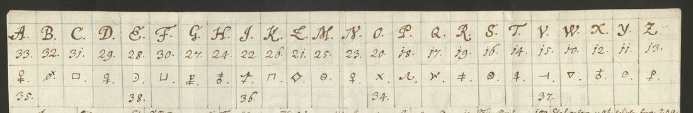

At a glanceKnown key applied · 192 of 192 cipher signs
- The letters
- Charles VI to Count Leopold Viktorin Windischgrätz: Vienna, 13 April 1720 and 24 July 1720 (to The Hague), and 11 April 1722 (to Cambrai). Nos. 2, 3 and 6 of the family’s register.
- Where
- Státní oblastní archiv v Plzni, Rodinný archiv Windischgrätzů: autograph inv. 694 karton 5 (R5021), register copies inv. 5 book 5 pp. 404–416 (R5022, R5023, R5024). Catalogue item 69.
- The cipher
- The private key R5018: each letter has a number from 10 to 38 and a graphic sign, the vowels a second number; about 300 codes for words and names.
- How it was deciphered
- The key, on DECODE and in the same archive, was transcribed and applied by hand, matching the copyist’s signs to the key’s drawings.
- What it says
- Orléans and Spain, the burden of the Barrier; Beretti Landi’s proposal of a marriage between the Emperor’s children and Philip V’s sons, “beede so klein”.
- Still open
- The cleartext around the cipher is summarised, not edited; Nos. 4, 5 and 7 of the register are not on DECODE.
The first letter of the series, of 3 February 1720, is in the Court Chancellery’s nomenclator R5017 and announces this key; it is a different cipher with its own page: Charles VI to Windischgrätz, 3 February 1720.
01 The private key
R5018 is the new private key, on a single sheet. Each of 24 letters has a number from 10 to 38 and a graphic sign, and the vowels have a second number. About 300 codes follow, as numbers 39–210 or two-letter groups (ab Anjou, fb Spanien, zi Hof, 69 Beretti Landi, 151 Oesterreich, 159 Orleans), and the nulls are 3 4 5 6 7 9. Several names were added later in paler ink, among them Fleury, Walpole and Windischgrätz himself. The docket on the back reads “Ziffern mit J[hr]: K[ayserlichen] M[ajestät] …”. Mírka noted in 2012 that the later letters are in this key.

02 The three letters
In R5018 the letters are spelt out one symbol at a time, mixing the number and the sign for the same letter freely, and names are given as codes. Decrypted from the register copy:

- No. 2, 13 April 1720. “Das ob und Orleans sich endlich wider miteinander verstehen werden, ist schir zu besorgen”; and a project for how one might free oneself entirely “von dem onere der Barriere”, the Emperor’s cost of the Dutch garrisons in the Barrier fortresses.
- No. 3, 24 July 1720. The Spanish envoy Beretti Landi, in the name of his court, has proposed “eine Heyrath zwischen ein oder andern meiner Kinder und Anjou Söhne”. Charles would stay “in guter Verstendnus mit seinen Hof”, but as for die Heyrath, “weren beede so klein” that nothing should yet be made known. His eldest daughter, Maria Theresa, was three.
- No. 6, 11 April 1722, to Windischgrätz as plenipotentiary at Cambrai, opening with the Emperor’s grief at the death of his Oberststallmeister. The cipher covers what he writes “wegen des Beretti”, especially what he discussed “mit Beretti wegen einer Heyrath” between “Spanien und mir”. Beretti is “erbittert wider mich und Oesterreich”, yet it is not bad “sich des Beretti zu gebrauchen” and to show “ihm all Convenienz in utili et honorifico”.
The marriage theme runs from 1720 to 1722, well before the Ripperda negotiations of 1725 that promised the Emperor’s daughters to Philip V’s sons.
03 Method and what remains
The key sheet was transcribed from tiled crops of the DECODE image, with a confidence mark on each cell. The letters were decoded by hand from the register copies (and the autograph of No. 2), because the copyist’s signs have to be matched to the key’s drawings. The copyist uses one sign for D and N, and one sign for Z and G; the numbered letters around each sign decide which is meant.
- No. 2, first passage: the cipher opens with a V-sign, giving “und Orleans”. The subject, Spain, is inferred from the context. M.
- No. 3, “ein Proposition” and “die Heyrath” each contain a copyist’s wrong letter; the words are H.
- All other passages are H. Letters 4, 5 and 7 of the register (book pp. 409–414, 417 onward) are not on DECODE and were not seen. The cleartext of Nos. 2, 3 and 6 is summarised here, not edited.
04 Sources
- DECODE (de-crypt.org): R5018 (key); R5021, R5022, R5023, R5024 (letters). Originals: Státní oblastní archiv v Plzni, pracoviště Klášter u Nepomuka, RA Windischgrätzů, inv. 694 karton 5, inv. 5 book 5, keys karton 164 inv. 1403 sign. 103.
- Jakub Mírka, “Raně novověká šifrovaná korespondence ve fondech šlechtických rodinných archivů Státního oblastního archivu v Plzni”, Západočeské archivy 2012, pp. 44–72, reprinted in Crypto-World 3–4/2013.
The transcription of key R5018 and the decipherments: targets/windischgraetz1720b/ in the repository.